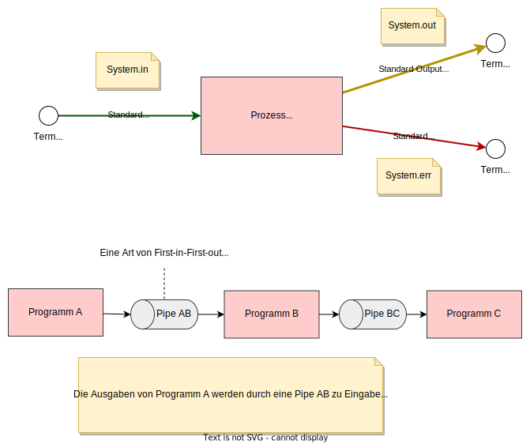
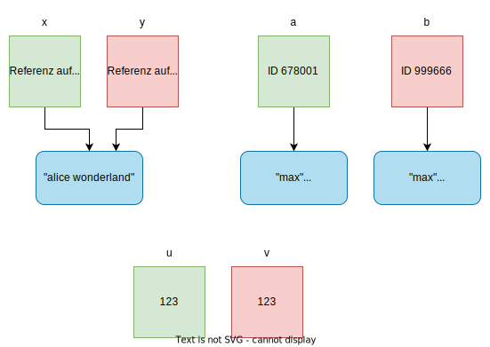
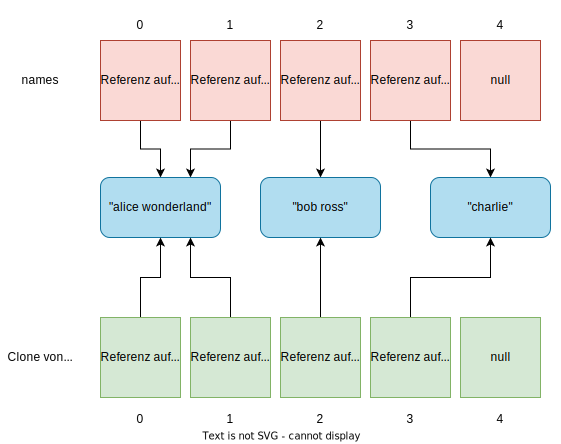
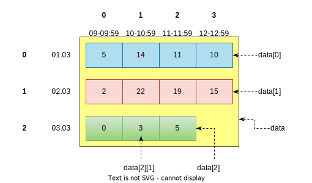
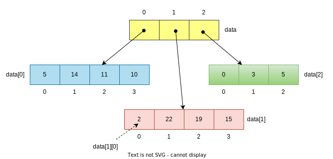
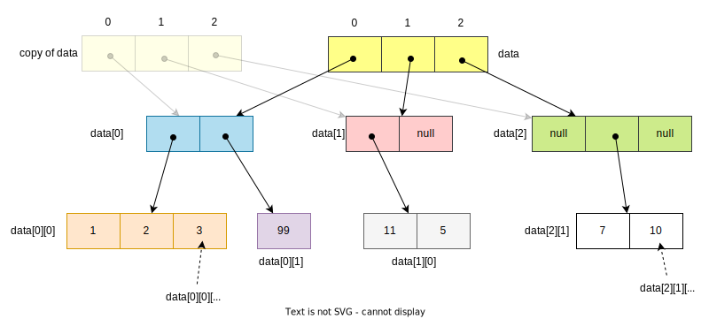

# Projektverzeichnis erstellen.
mkdir projekt
# In Projektverzeichnis wechseln.
cd projekt
# Quelltextdatei erzeugen und editieren. (SPEICHERN!)
notepad MyClass.java
# Quelltextdatei mit Java Compiler übersetzen.
# Erfolgt keine Ausgabe, war die Übersetzung erfolgreich.
javac MyClass.java
# Mit dem Java Launcher eine Klasse starten (deren main-Methode).
java MyClass
Hinweis: Kleinere Programme können mit mit dem Java Launcher direkt übersetzt und sofort danach ausgeführt werden. Allerdings wird die class Datei nicht gespeichert. Beispiel:
# Launcher erkennt, dass es sich um eine Quelltextdatei handelt.
# Er übersetzt zuerst die Datei und führt sie gleich danach aus.
java MyApp.java
011001?int belegt 32 Bits (also 4 Bytes) im Speicher.byte lässt nur Werte im Bereich -128 bis +127 zu.int kann man multiplizieren, aber einen String hingegen nicht.In Java gibt es zwei Kategorien von Datentypen:
Hinweis: Für jeden primitiven Datentyp existiert in Java ein korrespondierender Referenzdatentyp - sogenannte Wrapper-Klassen. Beispiel: byte und Byte, char und Character, double und Double.
Um den Wertebereich eines primitiven Datentyps zu ermitteln, verwende dessen zugehörige Wrapper-Klasse. Beispiel:
Byte.MIN_VALUE
Byte.MAX_VALUE
Integer.MAX_VALUE
Integer.MIN_VALUE
double und floatMit den Datentypen double und float können wir Zahlen mit Nachkommastellen abspeichern. Hier kann es jedoch zu Rundungsfehlern kommen. Für double gilt: Ungefähr 15 signifikante Ziffern können exakt dargestellt werden. Bei Datentyp float sind es hingegen nur etwa 7.
Die betragsmäßig größte Zahl ist bei double etwa 1.8E308 und die betragsmäßig kleinste Zahl ist 4.9E-328. (E-328 bedeutet "10 hoch -328").
Achtung: Manche Dezimalzahlen, z.B. 0.1, sind im Binärsystem nicht exakt darstellbar. Diese können nur gerundet abgespeichert werden.
Merke:
int..) haben den Datentyp double.2e-3) so hat dieser Wert den Datentyp double.f. Beispiel: 2.5f.Regeln:
int Werte miteinander verrechnet, entsteht wieder ein Ergebnis vom Typ int. Nachkommastellen werden abgeschnitten.double ist, dann ist das Gesamtergebnis vom Typ double.byte Werte miteinander, ist das Ergebnis vom Typ int.short Werte miteinander, ist das Ergebnis vom Typ int.float Werte miteinander, ist das Ergebnis vom Typ float.In Java können Zahlen im Binär-, Oktal-, Dezimal- und Hexadezimalsystem angegeben werden.
Binäre Zahlen beginnen mit Präfix 0b, oktale Zahlen beginnen mit Präfix 0 und hexadezimale Zahlen beginnen mit Präfix 0x. Ohne Präfix werden Zahlen als Dezimalzahlen interpretiert.
Eine Instanz ist ein Objekt einer Klasse. Jede Instanz hat eine Identität, einen Zustand und ein Verhalten.
Instanzmethoden sind Methoden, die auf einem Objekt aufgerufen werden müssen. Diese Methoden haben Zugriff auf die Instanzzustand.
Statische Methoden sind Methoden, die direkt auf der Klasse aufgerufen werden. Sie benötigen kein Objekt, um ihre Aufgabe durchzuführen. Selbst wenn man auf einem Objekt eine statische Methode aufruft, so hat sie dennoch keinen Zugriff auf den Objektzustand. Beispiel: Die Methoden sin, cos, pow der Klasse Math. Statische Methoden werden i.d.R. für Algorithmen verwendet oder einfach nur als Hilfsmethoden. Weitere Beispiele: Die Methoden valueOf und format der Klasse String.
In Java werden statische Methoden häufig auch als Factory-Methoden verwendet. Eine Factory-Methode hat die Aufgabe, Objekte einer Klasse zu erzeugen.
Merke: Ein String-Objekt ist unveränderlich. Jeder Methodenaufruf auf einem String-Objekt liefert ein neues String-Objekt als Ergebnis!
Achtung: Bei den meisten Methoden wird die Groß- und Kleinschreibung berücksichtigt!
Merke: Wenn du Zeichenketten vergleichst, verwende statt == die equals bzw. die equalsIgnoreCase Methode! Der Vergleichsoperator == prüft, ob zwei Variablen auf dasselbe Objekt verweisen, während equals prüft, ob die beiden Variablen gleiche Werte enthalten.
String name = "alice";
name.length(); // 5
name.charAt(0); // 'a'
name.charAt(name.length() - 1); // 'e'
String message = "The result is: " + 123.5; // "The result is 123.5"
String.valueOf(true); // "true"
String.valueOf(456); // "456"
name = "Alice Wonderland";
name.substring(6); // "Wonderland"
name.substring(6, 9); // "Won"
name.toLowerCase(); // "alice wonderland"
name.toUpperCase(); // "ALICE WONDERLAND"
"abc".repeat(3); // "abcabcabc"
" some text ".trim() // "some text"
"His name is \"Bob\"!"; // His name is "Bob"!
"2024-03-02".split("-"); // String[3] { "2024", "03", "02" }
"2024.03.02".split("\\."); // String[3] { "2024", "03", "02" }
String.join("-", "2024", "03", "02"); // "2024-03-02"
"Alice Bob Charlie".replace(" ", "-"); // "Alice-Bob-Charlie"
"Alice Bob Charlie".replace(" ", ""); // "AliceBobCharlie"
"Alice".startsWith("Al"); // true
"Alice".startsWith("al"); // false
"Alice".endsWith("ce"); // true
"Alice".endsWith("e"); // true
"Alice".endsWith(""); // true
"Alice".indexOf("ic"); // 2
"Anna".indexOf("n"); // 1
"Anna".lastIndexOf("n"); // 2
// Ergebnis der folgenden Anweisung: "3,00 + 7,000 ergibt A"
"%.2f + %.3f ergibt %X".formatted(3.0, 7.0, 10);
"ABC".equals("abc") // false
"ABC".equalsIgnoreCase("abc"); // true
"Alice Wonderland".contains("Won"); // true
"abc".compareTo("abd"); // -1, d.h. "abc" < "abd"
"abd".compareTo("abc"); // 1, d.h. "abd" > "abc"
"abc".compareTo("abc"); // 0, d.h. "abc" = "abc"
Mit der Klasse StringBuilder können wir Zeichenpuffer erstellen und diese Zeichen direkt bearbeiten, ohne jedes Mal einen neuen String zu erzeugen. Das ist wesentlich effizienter und ressourcenschonender.
Merke: Methoden verändern das StringBuilder-Objekt selbst. Um ein String-Builder Objekt in einen String zu konvertieren, rufe Methode toString auf.
Hinweis: Viele Methoden, die in der Klasse String vorhanden sind, gibt es auch im StringBuilder.
String lastName = "Wonderland";
StringBuilder buffer = new StringBuilder(lastName);
buffer.insert(0, "Alice "); // "Alice Wonderland"
buffer.setCharAt(0, 'a'); // "alice Wonderland"
buffer.delete(0, 6); // "Wonderland"
buffer.append(" from Oz"); // "Wonderland from Oz"
String newLastName = buffer.toString();
Ein Array ist eine lineare Datenstruktur, die ihre Elemente sequenziell anordnet. Jedes Element hat eine feste Position (Index). Das erste Element hat den Index 0. Die Elemente müssen denselben Datentyp haben.
Merke: Ein Array kann strukturell nicht verändert werden. D.h. Elemente können weder entfernt noch eingefügt werden. Ein Element lässt sich jedoch mit einem neuen Element ersetzen.
Hinweis: Die Kurzschreibweise { e1, e2, ... } ist nur bei Variablendefinitionen zulässig. Will man der Array-Variablen später ein neues Array-Objekt zuweisen, geht dies nur mit dem Operator new.
int[] data = new int[100]; // int[100] { 0, 0, ..., 0 }
int[] primes = { 2, 3, 5, 7, 11 };
primes.length; // 5
primes[0]; // 2
primes[1]; // 3
primes[0] = 19; // int[5] { 19, 3, 5, 7, 11 }
primes = { 11, 13, 17, 19 }; // Fehler!!!
primes = new int[] { 11, 13, 17, 19 }; // int[4] {...}
Die Hilfsklasse java.util.Arrays bietet zahlreiche Methoden an, um Array-Objekte zu verarbeiten. Beispiele:
int[] numbers = { 6, 2, 7, 1 };
Arrays.sort(numbers); // int[4] { 1, 2, 6, 7}
Arrays.fill(numbers, 2); // int[4] { 2, 2, 2, 2}
int[] someOtherNumbers = { 2, 2, 2, 2 };
Arrays.equals(numbers, someOtherNumbers); // true
someOtherNumbers = new int[] { 2, 2, 2 };
Arrays.equals(numbers, someOtherNumbers); // false
String[] names = { "alice", "bob", "charlie", "damian" };
// Achtung: binarySearch erwartet, dass die Elemente des Arrays
// aufsteigend sortiert sind!
Arrays.binarySearch(names, "bob"); // 1
int[] b1 = { 7, 3, 5 };
int[] b2 = { 7, 3, 5, 6 };
Arrays.compare(b1, b2); // -1, d.h. b1 < b2
Arrays.compare(b2, b1); // 1, d.h. b2 > b1
Arrays.compare(b2, b2); // 0, d.h. b2 gleich b2
int[] copy = b1.clone(); // int[3] { 7, 3, 5 }
numbers = new int[] { 5, 2, 1, 10, 19, 25 };
Arrays.copyOf(numbers, 3); // int[3] { 5, 2, 1 }
Arrays.copyOfRange(numbers, 3, 3 + 2); // int[2] { 10, 19 }
Hinweis: Die Bedingungen müssen boolesche Ausdrücke sein, d.h. die Berechnungen müssen entweder true oder false ergeben. Numerische Werte sind nicht erlaubt.
Die Verzweigungen else if und else sind immer optional.
public static void main(String[] args) {
if (args.length >= 3) {
System.out.printf(
"Name mit Anrede: %s %s %s\n",
args[0], args[1], args[2]);
} else if (args.length >= 2) {
System.out.printf(
"Name: %s %s\n", args[0], args[1]);
} else if (args.length >= 1) {
System.out.printf("Vorname: %s\n", args[0]);
} else {
System.out.println(
"Rufen Sie das Program wie folgt auf:"
+ "[Anrede] Vorname Nachname");
}
}
Jeder Operator hat eine vordefinierte Priorität und ggf. eine Assoziativität. Die Assoziativität legt fest, ob zwei nebeneinanderstehende Operatoren gleicher Priorität von links oder rechts ausgewertet werden. Beispiel:
int age = 17;
boolean isAdult = age >= 18;
// Zwei Operatoren: >= und =
// Operatoren nach Priorität: >=, =
// (boolean isAdult = (age >= 18))
// 4 Operatoren: =, +, *, -
// Operatoren nach Priorität : *, +/-, =
double result = 8 + 3 * 7 - 1
// Auswertung durch Compiler:
// (double result = ((8 + (3 * 7)) - 1))
// 3 Operatoren: =, =, +
// Operatoren nach Priorität: +, =
// Assoziativität von = ist rechts.
int x;
int y;
x = y = 3 + 1
// Auswertung durch Compiler:
// (x = (y = (3 + 1)))
| Operator | Bedeutung | Ergebnisdatentyp |
|---|---|---|
| == | Vergleicht Werte miteinander; Prüft auf Identität | Boolean |
| != | Testet auf Ungleichheit bzw. auf unterschiedl. Identität | Boolean |
| < | Kleiner als | Boolean |
| > | Größer als | Boolean |
| <= | Kleiner gleich als | Boolean |
| >= | Größer gleich als | Boolean |
| && | Logische UND-Verknüpfung | Boolean |
| || | Logische ODER-Verknüpfung | Boolean |
| ! | Logische Negation | Boolean |
| + | Addition oder String-Konkatenation | Numerisch oder String |
| - | Subtraktion | Numerisch |
| * | Multiplikation | Numerisch |
| / | Division (Integerdivision / Gleitkommadivision) | Numerisch |
| % | Modulo (Division mit Rest) | Numerisch |
| >> | Bitshift nach rechts | Numerisch |
| << | Bitshift nach links | Numerisch |
| & | Bitweises UND | Numerisch |
| | | Bitweises ODER | Numerisch |
| ^ | Bitweises ENTWEDER-ODER (XOR) | Numerisch |
| () | Call-Operator (Methoden aufrufen) | variabel |
| [] | Index-Operator (Elementzugriff bei Arrays) | variabel |
| . | Member-Access-Operator (Zugriff auf Felder, Methoden) | variabel |
| = | Zuweisungsoperator | variabel |
| ++ | Inkrement-Operator (Addieren von 1) | numerisch |
| -- | Dekrement-Operator (Subtrahieren von 1) | numerisch |
Hinweis: Die Anweisung break innerhalb der while-Schleife beendet die Schleife vorzeitig. Die Anweisung continue hingegen, springt direkt zum Kopf der Schleife, damit die Bedingung neu geprüft wird.
while (index < args.length) {
System.out.printf("Argument %d: %s\n", index + 1, args[index]);
index++;
}
Diese Schleife ist fußgesteuert. Sie wird mindestens einmal ausgeführt. Die break Anweisung verlässt die Schleife vorzeitig. Die continue Anweisung springt direkt zum "Fuß" der Schleife, also zum Bedingungsausdruck.
do {
System.out.printf("Argument %d: %s\n", index + 1, args[index]);
index++;
} while (index < args.length); // <- Semikolon!
Die for-Schleife besteht aus drei Bereichen: Initialisierungsbereich, Bedingungsbereich und "Iterationsbereich".
Der Initialisierungsbereich wird einmal bei Betreten der Schleife ausgeführt. Der Bedingungsbereich wird vor jedem Schleifendurchlauf geprüft. Der Iterationsbereich wird nach jedem Schleifendurchlauf ausgeführt.
Die Anweisung break verlässt die Schleife vorzeitig, ohne dass der Iterationsbereich noch einmal ausgeführt wird. Die Anweisung continue springt direkt zum Iterationsbereich und danach zum Bedingungsbereich.
Hinweis: Lässt man den Bedingungsbereich leer, ist das gleichbedeutend mit true. Die Schleife wird also unendlich oft ausgeführt - eine sogenannte Endlosschleife.
for (int i = 0; i < args.length; i++) {
System.out.printf("Argument %d: %s\n", i + 1, args[i]);
}
System.out.println("\n\n"); // Leerzeilen einfügen.
for (int a = 0, b = 5 ; b >= 0 ; a++, b--) {
System.out.printf("a = %d und b = %d\n", a, b);
}
Die foreach-Schleife vereinfacht die Verarbeitung von sequenziellen Datenmengen. Für jedes Element der Datensequenz wird der Schleifenrumpf ausgeführt. Um das Datenelement anzusprechen, das gerade abgearbeitet wird, muss man eine Laufvariable definieren.
Hinweis: Die foreach-Schleife funktioniert mit allen Datenobjekten, deren Datentyp die Schnittstelle Iterable implementiert.
Allgemeine Syntax:
for (Datentyp element : datenmenge) {
// tue etwas mit element
}
Hier ein paar konkrete Beispiele:
for (String argument : args) {
System.out.printf("Argument: %s\n", argument);
}
int[] primes = { 2, 3, 5, 7, 11, 13 };
for (int prime : primes) {
System.out.println(prime);
}
// Klasse String ist kein Iterable. Deshalb muss ein String
// vorher in ein Array konvertiert werden.
for (char c : "Alice".toCharArray()) {
System.out.printf("%c ", c);
}
// Die Laufvariable kann nicht dazu benutzt werden, Elemente
// im Array zu überschreiben! Die Laufvariable ist lediglich
// eine Kopie des Elements.
int[] numbers = { 1, 2, 3 };
for (int n : numbers) {
n = n * 2; // Kein Effekt auf numbers!
}
Mittlerweile unterstützt die switch Anweisung beliebige Datentypen. Früher war man auf int, char, String beschränkt. Switch Statements unterstützen neuerdings auch sogenannte Patterns. Das ist ein erweitertes Feature, das wir erst später behandeln.
Hinweis: Verwendet man Zeichenketten (String) wird der Vergleich mittels equals vorgenommen. Die Groß und Kleinschreibung wird dadurch also berücksichtigt.
Besonders hilfreich bei der modernen switch-Variante ist das automatische Einfügen von break. Diese Funktionalität wird aber nur dann bereitgestellt, wenn wir nach dem Schlüsselwort case einen Pfeil -> verwenden, statt eines Doppelpunktes :.
Hinweis: Fall-Throughs sind in Java möglich, wenn man das break in einem case weglässt.
Allgemeine Syntax:
// Alte Variante
switch (ausdruck) {
case konstante1:
anweisungen;
break;
case konstante2:
anweisungen;
break;
default:
anweisungen;
break;
}
// Moderne Variante
switch (ausdruck) {
// Wird {} verwendet, entfällt das Semikolon. Es können
// im {} Block mehrere Anweisungen ausgeführt werden.
case konstante1, konstante2 -> { anweisungen }
// Eine Anweisung ohne {} Block benötigt ein Semikolon.
case konstante3 -> anweisung;
default -> anweisung;
}
// In Form einer Expression:
switch (ausdruck) {
// Schlüsselwort yield dient zur Rückgabe eines Wertes
// in einem {} Block.
case konstante1, konstante2 -> { anweisungen; yield wert; }
// Angabe von yield hier nicht notwendig, da kein {} Block.
case konstante3 -> wert;
default -> wert;
}
Der Conditional-Operator ist eine "kompakte Form" für eine if-else-Anweisung. Im Unterschied zu if kann der Operator jedoch an allen Stellen verwendet werden, wo ein Berechnungsausdruck erwartet wird.
Der Operator besteht aus den beiden Symbolen ? und :. Es sind drei Ausdrücke A, B und C anzugeben. Beispiel:
A ? B : C
// Ungefähre Analogie zur if-else-Anweisung
if (A == true) {
B ist das Ergebnis des Operators
} else {
C ist das Ergebnis des Operators
}
Der Operator arbeitet wie folgt: Es wird zuerst geprüft, ob A den Wert true liefert. Falls dem so ist, wird B ausgewertet und dessen Wert als Ergebnis zurückgegeben. Falls jedoch A false ist, wird C ausgewertet und das Ergebnis von C als Gesamtergebnis zurückgegeben.
Es ist zu beachten, dass die Ausdrücke B und C Werte gleichen Datentyps liefern.
int a = 3;
int b = 7;
int max;
// Maximum mit if-Verzweigung ermitteln.
if (a > b) {
max = a;
} else {
max = b;
}
// Mit dem Conditional Operator geht es kompakter.
max = a > b ? a : b;
// Folgende Anweisung kompiliert nicht, da
// B und C den Datentyp void haben, also keinen Wert liefern.
a > b ? System.out.println("a ist Maximum") : System.out.println("b ist Maximum");
In Java werden Fehler durch sogenannte Exception-Objekte abgebildet. Das sind herkömmliche Instanzen der Klasse Exception. Es gibt zwei Arten von Exceptions: checked und unchecked. Eine checked Exception muss vom Entwickler abgefangen werden, eine unchecked Exception jedoch nicht.
Exceptions, die von der Klasse RuntimeException erben, sind unchecked. Andere Exceptions sind checked.
// Beim Parsing eines Strings nach int, kann es z.B.
// zur Exception "NumberFormatException" kommen.
// Dies ist im folgenden Beispiel der Fall.
int number = Integer.parseInt("i am not a number");
Im Normalfall führt eine Exception zum Programmabbruch. Um das zu vermeiden, muss die Exception durch den Entwickler abgefangen und behandelt werden. Das geht mit der sogenannten try-catch Anweisung. Beispiel:
try {
// Anweisungen, die Exceptions
// auslösen könnten.
} catch (ExceptionTyp e) {
// Hier kann die Fehlerbehandlung erfolgen.
// Mit der Variablen e können Informationen
// der Exception abgerufen werden.
// Jede Exception kann einen Stack-Trace ausgeben.
// Das ist der Aufrufstapel / die Aufrufhierarchie, der/die
// zur Exception geführt hat.
e.printStackTrace();
// Jede Exception enthält mindestens einen Fehlertext,
// der mit getMessage() abrufbar ist.
e.getMessage();
// Exceptions können trotz Fehlerbehandlung an den Aufrufer
// per throw weitergereicht werden.
throw e;
// Eine neue Exception auslösen und die ursprüngliche
// Exception als Zusatzinfo mitgeben.
throw new MyOwnException("message", e);
} finally {
// Hier stehen Anweisungen, die immer auszuführen sind,
// egal ob die Anweisungen im try-Block eine
// Exception ausgelöst haben oder nicht.
// Typischerweise werden hier die Ressourcen freigegeben,
// die im try-Block reserviert wurden.
// Selbst wenn im catch-Block ein return ausgeführt wird,
// werden die hier stehenden Anweisungen vorher noch
// ausgeführt.
}
Hinweis: Es dürfen mehrere catch Blöcke auf einen try Block folgen. Jeder catch Block kann eine oder mehrere Exceptions abfangen. Es muss darauf geachtet werden, dass spezifische Exceptions vor allgemeineren Exceptions per catch abzufangen sind.
Wenn eine Exception ausgelöst, aber nicht per try-catch behandelt wird, dann bricht die Java Runtime Environment die aktuelle Methode ab und reicht das Exception Objekt an den Aufrufer der Methode. Falls auch der Aufrufer die Exception nicht abfängt, wird die Exception abermals an den Aufrufer des Aufrufers weitergereicht usw. Sofern die Exception an die main Methode weitergereicht und dort nicht behandelt wird, bricht das Programm abrupt ab.
In wenigen Situationen ist es hilfreich, den Compiler den Datentyp einer Variablen selbst ermitteln zu lassen. Das ist zum Beispiel bei der Objektkonstruktion der Fall. Dort muss man häufig den Datentyp zweimal angeben: nach dem new Operator und vor der zu erstellenden Variable. Um diese Redundanz zu vermeiden, bietet Java das Schlüsselwort var an. Beispiel:
// Ohne Verwendung von var:
HashMap<Integer, String> map = new HashMap<Integer, String>();
// Mit Verwendung von var.
// Compiler setzt den Datentyp für Variable map
// automatisch auf HashMap<Integer, String>.
var map = new HashMap<Integer, String>();
Hinweis: Javas var hat nichts mit dem var der Sprache JavaScript zu tun. Mit var erzeugen wir in Java eine Variable mit festgelegtem Datentyp, der sich nicht später ändern kann.
Für jedes Programm, das wir ausführen, erstellt das Betriebssytem eine Datenstruktur namens Prozess. Diese enthält sämtliche Informationen über das laufende Programm einschließlich verwendeter Resourcen und Zugriffsrechte.
Standardmäßig besitzt jeder Prozess einen Input Stream und zwei Output Streams. Wenn man ein Kommandozeilenprogramm startet, ist der Input Stream für gewöhnlich mit dem Terminal verbunden. Dasselbe gilt für die beiden Output Streams (Normal und Error).
In Java können wir diese Streams mit System.in (Input Stream), System.out (Output Stream) und System.err (Error Output Stream) ansprechen.
Im Terminal lassen sich die Quellen und Senken der Streams konfigurieren. Somit können auch Daten aus Dateien gelesen und Daten in Dateien geschrieben werden. Beispiel:
# Inhalt von Datei numbers.txt mit dem
# Input Stream von Adder verknüpfen.
cat .\numbers.txt | java .\Adder.java
# Daten des Output Streams von Adder in Datei
# output.txt schreiben.
java Adder.java > output.txt

Ein Scanner ist ein Objekt, mit dem wir Daten aus verschiedenen Datenquellen lesen können. Mögliche Quellen sind zum Beispiel Dateien, Zeichenketten, Pipes (FIFO), Network Sockets und natürlich Terminals.
Der Scanner liest seine Daten wie von einem "Transportband". Im Normalfall liest der Scanner immer bis zum nächsten Whitespace Zeichen - dem Delimiter.
Standardmäßig blockiert ein Scanner das Programm, wenn Daten einzulesen sind, aber das "Transportband" leer ist.
// Scanner liest Daten aus dem Input Stream.
var s = new Scanner(System.in);
// Blockiert, falls keine Daten im Stream vorhanden.
int number = s.nextInt();
int anotherNumber = s.nextInt();
System.out.printf("Eingelesene Zahl ist %d\n", number);
System.out.printf("Zweite eingelesene Zahl ist %d\n", anotherNumber);
// Gibt es noch weitere Daten im Input Stream?
if (s.hasNext()) {
System.out.printf("Weitere Daten: %s\n", s.next());
}
Wenn man den Nutzer auf dem Terminal dazu auffordert, etwas einzugeben, dann kann es unter Umständen passieren, dass er mehrere Tokens (durch Delimiter getrennte Zeichenfolgen) eintippt. Die next Methoden des Scanners würden dann nicht an jeder Stelle blockieren, sondern automatisch das nächste Token einlesen. Um das zu vermeiden, kann man zum Beispiel nextLine mit explizitem Parsing verwenden. Beispiel:
String input;
System.out.print("Gib eine Zahl ein: ");
input = scanner.nextLine();
int firstNumber = Integer.parseInt(input);
System.out.print("Gib eine zweite Zahl ein: ");
// Gesamte Zeile einlesen
input = scanner.nextLine();
// Manuell in int parsen.
int secondNumber = Integer.parseInt(input);
int sum = firstNumber + secondNumber;
System.out.printf("%d + %d = %d!\n", firstNumber, secondNumber, sum);
Achtung: Der Scanner berücksichtigt die aktuell eingestellten regionalen Einstellungen (Locale). Die herkömmlichen parse Methoden (wie z.B. Double.parseDouble) berücksichtigen keine regionalen Einstellungen! Die Locale kann für den Scanner konfiguriert werden:
var scanner = new Scanner(System.in);
scanner.useLocale(Locale.GERMANY);
// Scanner berücksichtigt die Locale. Hier wird
// ein Komma als Dezimaltrenner erwartet, da GERMANY
// eingestellt ist.
double value = scanner.nextDouble();
// parseDouble berücksichtigt keine Locale. Hier ist der
// Dezimaltrenner immer ein Punkt (.)
value = Double.parseDouble("123.456");
// printf verwendet die per Default eingestellte Locale.
// In Deutschland würde die Gleitkommazahl mit Dezimaltrenner ,
// ausgegeben werden. Um die Locale explizit festzulegen,
// kann man als erstes Argument die Locale vorgeben. Hier US.
System.out.printf(Locale.US, "%f", 2.56); // 2.56
System.out.printf(Locale.GERMANY, "%f", 2.56); // 2,56
Funktionsweise des Scanners als Diagramm:
In den Packages java.io, java.nio.file und java.nio befinden sich zahlreiche Klassen, um Dateien und Verzeichnisse zu verwalten.
Um den Inhalt einer Textdatei einzulesen, kann man die Klasse Files verwenden in Kombination mit der Klasse Path und StandardCharsets. Beispiel:
import java.nio.file.Files;
import java.nio.file.Path;
import java.nio.charset.StandardCharsets;
// Erstelle den relativen Pfad ".\data\contacts.txt"
// Hinweis: Es wird nicht geprüft, ob dieser Pfad
// tatsächlich im Dateisystem existiert!
Path pathToFile = Path.of("data", "contacts.txt");
// Lies gesamten Inhalt der Datei und gehe davon aus,
// dass die Zeichenkodierung UTF-8 für den Inhalt
// verwendet wurde.
String fileContent = Files.readString(pathToFile, StandardCharsets.UTF_8);
Methoden, die auf Dateien zugreifen, können in den meisten Fällen IOExceptions auslösen. Solche Exceptions sind checked und müssen deshalb abgefangen werden. Beispiel:
import java.nio.file.Files;
import java.nio.file.Path;
import java.nio.charset.StandardCharsets;
import java.io.IOException;
import java.nio.file.AccessDeniedException;
import java.nio.file.NoSuchFileException;
try {
Path pathToFile = Path.of("data", "contacts.txt");
String logContent = Files.readString(pathToFile, StandardCharsets.UTF_8);
} catch (AccessDeniedException e) {
System.err.printf("Kein Lesezugriff.\n");
} catch (NoSuchFileException e) {
System.err.printf("Datei existiert nicht.\n");
} catch (IOException ioe) {
System.err.printf("Irgendein anderer Input/Output Fehler\n");
}
Wenn wir einen Wert primitiven Datentyps in einer Variablen speichern, dann enthält diese Variable den vollständigen Wert. Kopiert man nun diese Variable in eine andere Variable, so wird der Wert vollständig kopiert.
int a = 123;
// Der Wert 123 wird nach b kopiert.
int b = a;
// b ist vollständige Kopie von a.
b++;
// a ist weiterhin 123
// b ist nun 124.
Erstellen wir eine Variable mit einem Referenzdatentyp, dann speichert diese Variable nicht ein Datenobjekt, sondern lediglich einen Verweis auf ein Datenobjekt. Man kann sich eine Referenz wie eine Speicheradresse oder ID vorstellen. Kopiert man nun diese sogenannte Referenzvariable in eine andere, dann wird also nicht das referenzierte Objekt kopiert, sondern lediglich die Referenz. Dadurch verweisen nun Originalvariable und Kopievariable auf dasselbe Objekt im Speicher.
// Variable name enthält _nicht_ das StringBuilder-Objekt,
// sondern nur einen Verweis auf dieses Objekt.
var name = new StringBuilder("Bob");
// Indem wir name nach copy kopieren, kopieren wir lediglich
// die Referenz. copy und name verweisen nun auf dasselbe
// StringBuilder-Objekt.
StringBuilder copy = name;
System.out.println(name); // Bob
System.out.println(copy); // Bob
name.append(" Ross");
System.out.println(name); // Bob Ross
System.out.println(copy); // Bob Ross
Rufen wir eine Methode auf, dann werden die Argumente in die zugehörigen Parameter kopiert. Im Falle von primitiven Werten, entsteht dabei eine vollständige Kopie. Falls Referenzen kopiert werden, kann die aufgerufene Methode über diese Referenz auf das Datenobjekt direkt zugreifen. Sie erhält also keine Kopie eines Datenobjekts.
int[] primes = { 2, 3, 5, 7, 11 };
// Variable primes wird in Parameter numbers der Methode modify
// kopiert. Dadurch erlangt modify direkten Zugriff auf das
// Array primes.
modify(primes);
// Gibt aus: [111, 3, 5, 7, 11]
System.out.println(Arrays.toString(primes));
void modify(int[] numbers) {
numbers[0] = 111;
}
Die Übergabe von Argumenten an Methoden geschieht in Java stets by value. Der Wert wird also in den Parameter kopiert.
Fälschlicherweise wird oft behauptet, Java unterstütze Pass by Reference. Pass by Reference hieße, dass ein Parameter Alias / Repräsentant einer anderen Variable sein darf.
int[] primes = { 2, 3, 5, 7, 11 };
modify(primes);
void modify(int[] numbers) {
// Da Argumente by Value übergeben werden,
// ist numbers lediglich Kopie von primes.
// Weisen wir numbers ein neues Array Objekt
// zu, hat dies keine Auswirkung auf primes.
numbers = new int[] { 13, 17, 19, 23 };
}
// Gäbe es eine Art "Pass By Reference" in Java
// könnte man primes direkt mittels numbers "umlenken"
// auf ein anderes Array-Objekt. Pseudo Code:
void modify(ref int[] numbers) {
// hier würde indirekt stehen: primes = new int[] { 1, 2, 3}
numbers = new int[] { 1, 2, 3}
}
Wenn wir zwei Variablen mit dem == Operator vergleichen, prüfen wir, ob sich in beiden Variablen dasselbe Bitmuster befindet. Das hat folgende Sequenzen:
Wenn die zu vergleichenden Variablen primitiven Datentyp haben, so wird effektiv geprüft, ob beide Variablen gleiche Werte besitzen. Beispiel: Wenn int a = 3 und int b = 3 dann ist a == b wahr, da ja in beiden der Wert 3 steht.
Wenn die zu vergleichenden Variablen einen Referenzdatentyp haben, so wird effektiv geprüft, ob beide Variablen auf dasselbe Objekt im Speicher verweisen. Beispiel:
String a = new String("abc");
String b = new String("abc");
a == b liefert false, da a und b auf unterschiedliche String-Objekte verweisen.
a.equals(b) liefert true, da a und b auf String-Objekte verweisen, die den gleichen Inhalt besitzen.
String a = "max";
String b = a;
a == b liefert true, da nun a und b auf dasselbe String-Objekt verweisen.
a.equals(b) liefert true, da a und b auf String-Objekte verweisen, die denselben Inhalt besitzen.

Hinweis: Wenn a == b gilt, dann sollte auch a.equals(b) den Wert true liefern. Umgekehrt kann jedoch aus a.equals(b) nicht geschlussfolgert werden, dass auch a == b gilt. Nur weil zwei Objekte gleich sind, heißt das nicht, dass sie auch identisch sind.
Kopieren wir einen Array, dessen Elemente primitiv sind (z.B. int, double), so ist die Kopie völlig isoliert vom Original.
Kopieren wir jedoch einen Array, dessen Elemente Referenzen sind (z.B. String, StringBuilder), so ist die Kopie nur teilweise vom Original isoliert. Die "Zellen" des Originals und der Kopie verweisen nämlich auf diesselben Datenobjekte im Speicher. Einerseits ist dadurch das Kopieren schnell erledigt, andererseits birgt das aber auch Gefahren, wenn man die referenzierten Objekte modifiziert.

Würde man eine vollständig isolierte Kopie erzeugen wollen, müsste man auch die von den Zellen referenzierten Datenobjekte kopieren. Das ist aber weder bei clone noch bei Arrays.copyOf der Fall.
Java unterstützt nur eindimensionale Arrays. Möchte man mehrere Dimensionen abbilden, kann man Arrays ineinander schachteln. Ein zweidimensionaler Array ist letztlich nur ein eindimensionaler Array, dessen Elemente ebenfalls Arrays sind.


int[][] table = {
{ 1, 2, 3, 4 },
{ 5, 6, 7, 8, 9 },
{ 10, 11, 12 },
};
// Datentyp von table ist int[3][].
// Datentyp von table[0] ist int[4].
// Datentyp von table[1] ist int[5].
// Datentyp von table[2] ist int[3].
// Datentyp von table[2][1] ist int.
